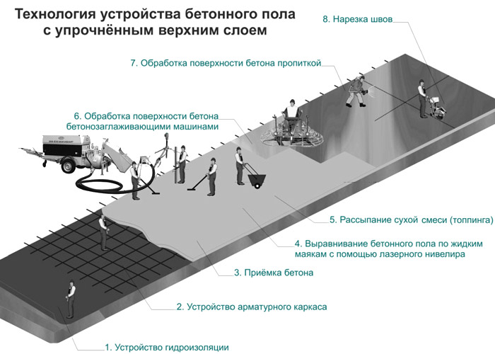

Самый популярный вид покрытия,
который может применяться в любой области, а особенно ценен в промышленных зданиях
Это идеальный вариант для любых торговых и промышленных зданий. Он обладает высокой износостойкостью и превосходными эксплуатационными характеристиками. Стоимость их относительно невысока. Бетонные промышленные полы охватывают широкую сферу применения: склады, автостоянки, магазины, комплексы, автомойки, салоны и автосервисы. Укладка пола может производиться как по грунтовому, так и по существующему цементобетонному основанию.
